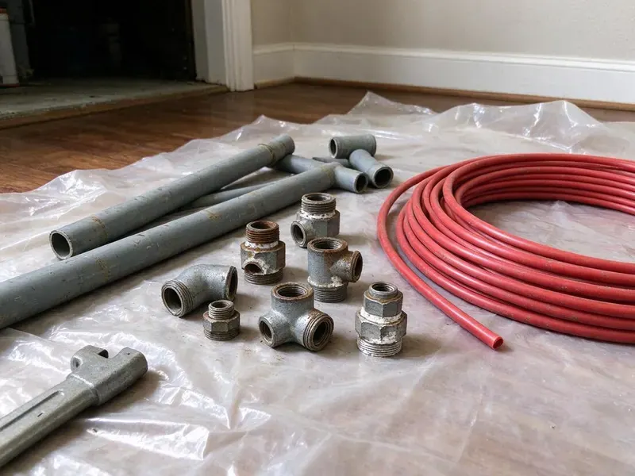

Sump Pump Replacement in Fairmont, WV
For reliable sump pump replacement in Fairmont, WV, trust the experienced plumbers at GJK Plumbing.
- Experienced Local Plumbers
- Quality Brands
- Durable Installations
- Battery Backup Options

Get Your Sump Pump Replaced Today in Fairmont, WV.
Do not wait for a flood, upgrade your protection with a new, reliable sump pump.
Your Trusted Source for Sump Pump Replacement in Fairmont, WV
Our team at GJK Plumbing understands the key role a sump pump plays in preventing costly water issues. We offer comprehensive sump pump replacement services for Fairmont, making sure your new system is correctly sized, installed and ready to handle any water intrusion.
Our expertise includes:
- Code Compliant Installations
- Accurate sizing and installation of new sump pumps.
- Vertical and tethered float switch installs and adjustments

Additional Plumbing Replacement Services in Fairmont, WV
When repairs are no longer enough, our replacement services in Fairmont, WV deliver durable upgrades that restore full performance.


Customers
Why Choose GJK Plumbing for Sump Pump Replacement in Fairmont, WV?
Manufactured homes are common in rural West Virginia, and their plumbing often needs special attention to skirting, insulation and freeze protection. Homes with basements or below-grade rooms rely on sump pumps during heavy storms and snowmelt. A failed pump can flood a basement quickly.
- Quality Pumps, We install cast iron pumps with heavy-duty switches from trusted brands.
- Mold Prevention, By keeping your basement dry, a new sump pump greatly reduces the risk of mold and mildew growth.
- Prevent Flooding, A new sump pump protects your basement and foundation from water damage caused by heavy rains.
Citywide Coverage
From older homes with basements to newer properties with drainage pits, we cover every part of Fairmont. Scheduling is easy, especially before and during storm season.
Experienced Team
Every plumber at GJK Plumbing is skilled in the details of sump pump replacement, from proper pit excavation to electrical hookups and discharge line routing. We deliver a professional and lasting installation every time.
Safety-First Approach
We meticulously follow all local plumbing codes for sump pump installations in Fairmont, WV, so your new system operates safely and effectively. Proper venting and discharge are always a priority.
Trusted Certified Fairmont Plumbing Services Professionals
At GJK Plumbing, we take pride in providing licensed, certified plumbing services throughout Fairmont, WV. Backed by recognized industry credentials, our experienced plumbers combine technical skill with genuine customer care. Whether it is repair, installation, or maintenance, we follow strict safety and quality standards to deliver long-lasting results you can trust.
Call Us Now PHCC Plumbing Contractor Recognition
PHCC Plumbing Contractor Recognition Better Business Bureau (BBB) Accreditation
Better Business Bureau (BBB) Accreditation Angi Certified Pro
Angi Certified Pro ISO 9001 Quality Management Certification
ISO 9001 Quality Management CertificationDependable Sump Pump Replacement Services in Fairmont, WV
Emergency Sump Pump Replacement in Fairmont, WV
A sudden sump pump failure can lead to immediate flooding, especially during heavy rainfall. GJK Plumbing offers emergency sump pump replacement in Fairmont, WV to address urgent situations. Our rapid response team will diagnose the problem and replace your faulty pump with a new, reliable unit. We work to minimize water damage and restore your peace of mind as quickly as possible.

Battery Backup Sump Pump Installation in Fairmont
Power outages during severe storms can leave a primary sump pump useless, leading to basement flooding. A battery backup sump pump offers important protection during these times. We install and replace complete battery backup systems, including dedicated marine-grade batteries and smart charging units. Our team helps you select a system with sufficient run-time to protect your Fairmont home through extended power interruptions. That gives you peace of mind when the lights go out.
Wayne Sump Pump Replacement in Fairmont
Wayne sump pumps offer a range of effective models, from entry-level to professional-grade. If your Wayne sump pump is failing, GJK Plumbing provides fast Wayne sump pump replacement in Fairmont. We make sure the new pump is correctly installed with proper discharge and check valve components, restoring your home's flood protection quickly and efficiently.
Sump Pump Basin and Pit Replacement in Fairmont, WV
Sometimes it is not just the pump that needs replacing, since the sump basin or pit itself might be cracked, damaged or too small. GJK Plumbing offers sump pump basin and pit replacement in Fairmont, WV so your entire system functions as it should. A properly sized and intact pit is essential for the efficient operation and longevity of your new sump pump.
High-Capacity Sump Pump Upgrades in Fairmont
If your current sump pump struggles to keep up with heavy water flow, especially during intense thunderstorms, it may be undersized. We offer high-capacity sump pump replacements and upgrades designed to handle large water volumes. Our plumbers will assess your water intrusion patterns and recommend a pump with greater horsepower and a higher GPM (gallons per minute) rating. This prevents the pump from cycling too frequently or failing under stress, common issues in some Fairmont properties.
Commercial Sump Pump Replacement in Fairmont
Businesses in Fairmont also rely on dependable sump pump systems to protect their commercial properties. We provide specialized commercial sump pump replacement services, handling larger, more complex systems designed for industrial or multi-unit buildings. Our team keeps disruption to your operations low while installing a robust pump capable of handling higher volumes of water.
Commercial Pit Pump Replacement in Fairmont
Commercial buildings often have elevator pits, parking garage drains and mechanical room sumps. These require pumps rated for higher flow and sometimes oil-sensing controls. We replace commercial pumps and alarms to meet code and insurance requirements. Duplex systems with alternating pumps provide a backup. We schedule work to avoid disrupting operations.

Yard Drainage Pit Pumps in Fairmont, WV
Some properties use pumps in yard drainage pits or below-grade window wells to handle storm runoff. These pumps may sit idle for months, then fail when they are needed most. We replace them with corrosion-resistant models and clear debris from the pit. We can route discharge away from foundations and onto approved areas. Regular testing before storm season is a good habit.
Sump Pump Replacement Near Me in Fairmont, WV
When you need sump pump replacement near me, a quick response can save your basement. GJK Plumbing serves Fairmont with plumbers who stock common pump sizes. We can often replace a failed pump the same day.
Local plumbers understand how heavy storms affect drainage in your area. We check your discharge line and grading so water moves away from the home. Call us for a clear price and fast scheduling.
GJK Plumbing at a Glance
- Licensed and insured plumbers serving Fairmont, WV
- 24/7 emergency service with same-day scheduling
- Upfront, flat-rate pricing before work begins
- 4.8-star rated by 832+ West Virginia customers
Fairmont Map
Fairmont Information
- Population
- 18,155
- Area codes
- Local
- Service area
- Fairmont and communities within 40 miles
- Nearby
- Bridgeport, Morgantown, Brookhaven, Clarksburg
Sudden heavy storms can flood basements and drainage pits in Fairmont, WV, so a reliable sump pump is key protection for homes with below-grade space.
Expert Services
Trust our professionals for reliable GJK Plumbing solutions in Fairmont, WV.
Our Specialized Plumbing Services in Fairmont, WV
At GJK Plumbing, we provide a complete range of plumbing services across Fairmont, WV. From leak detection to full system installations, our team ensures fast, precise, and affordable service for both residential and commercial properties. Explore our core services below:


How Our Sump Pump Replacement Process Works in Fairmont, WV
Our sump pump replacement process is designed to be quick and stress-free, from initial assessment to final testing.
Request a Quote
Call (681) 223-3607 or fill out our online form to schedule your sump pump assessment. We will discuss your needs and provide a clear, upfront quote for the replacement.
Expert Assessment
Our licensed plumber will visit your Fairmont home to evaluate your current sump pump, identify the cause of failure and recommend the best replacement options for your property.
Professional Installation
We carefully remove the old unit, prepare the sump pit and install your new sump pump, making sure all connections and discharge lines are properly configured according to local Fairmont codes.
Frequently Asked Questions About Sump Pump Replacement in Fairmont
The cost of sump pump replacement in Fairmont, WV usually ranges from $500 to $1,500, depending on the type of pump, submersible or pedestal, its horsepower and any necessary pit changes. Battery backup systems will add to this cost, usually between $300 and $800. We provide a written, upfront quote after assessing your needs.
In many areas, minor like-for-like sump pump replacements typically do not require a permit. However, if the replacement involves significant changes to the electrical system, discharge piping or the sump pit itself, a permit might be necessary. Our team will advise you on local code requirements in Fairmont.
Sump pumps generally have a lifespan of 7 to 10 years. Even if they appear to be working, their efficiency can decrease over time. Regular inspection and testing are crucial, and replacement is advisable as they approach the end of their expected service life.
Most standard sump pump replacements can be completed within 2 to 4 hours. More complex installations, such as those requiring new pit excavation or extensive discharge line work, might take longer, up to a full day.
Manufacturer warranties usually range from 3 to 5 years. We also offer a labor warranty.
We install Zoeller, Liberty and Wayne pumps. Cast iron models are our pick for durability.
A primary sump pump is your main defense against basement flooding, powered by your home's electricity. A backup sump pump, usually battery-powered or water-powered, is a secondary system that activates if the primary pump fails, loses power or cannot keep up with heavy water inflow. Many Fairmont homes are better off with a backup system due to storm risks.
While it might seem straightforward, professional sump pump replacement is highly recommended. It involves electrical connections, proper plumbing for the discharge line, and making sure the pump is correctly sized and installed to prevent future flooding and comply with local Fairmont codes.
What People Are Saying About Our Plumbing Experts?

Laura S.
I scheduled a water heater replacement, and the team made the process smooth and affordable. The new unit works perfectly, and they cleaned up after completing the job.
Water Heater Replacement · Morgantown, WV
Emily R.
I called GJK Plumbing for plumbing repair, and the technician was fast, polite, and thorough. They explained the problem clearly and fixed it the same day. I will definitely hire them again. Highly recommended!
Plumbing Repair · Bridgeport, WVSofia M.
Two new toilets installed in one visit, no mess left behind, and the tech even adjusted a faucet he noticed was dripping. Fair pricing and really friendly.
Toilet Installation · Bridgeport, WV
Robert G.
The trenchless sewer replacement saved our front yard. They walked us through the camera inspection footage first so we knew exactly what we were paying for.
Sewer Line Replacement · Clarksburg, WV
Mark T.
When our office needed drain cleaning, GJK Plumbing provided quick, reliable service. The plumber arrived on time and made sure every drain flowed perfectly before leaving. Very satisfied.
Drain Cleaning · Fairmont, WV
Patricia H.
We had a slab leak that two other companies could not find. GJK Plumbing located it in under an hour, explained our options, and the price matched the quote to the dollar.
Slab Leak Repair · Morgantown, WV